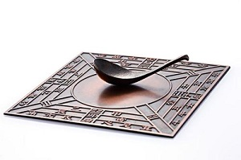
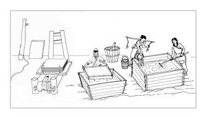
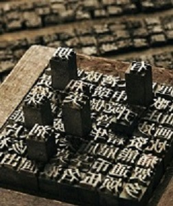

四大发明
四大发明是中国古代创新的智慧成果和科学技术，包括造纸术、指南针、火药、印刷术。
四大发明的说法，源自英国汉学家艾约瑟。
四种发明对中国古代的政治、经济、文化的发展产生了巨大的推动作用，经各种途径传至西方，对世界文明发展史产生巨大的影响力。
历史起源
尽管中华文明有很多重要的成就都以“四大”“五大”等命名，如四大美人、四大古典小说、四书五经，四大发明的概念却来源于西方学者，并在之后被中国人接受。意大利数学家杰罗姆·卡丹早在1550年就第一个指出，中国对世界所具有影响的“三大发明”：是司南（指南针）、印刷术和火药。并认为它们是“整个古代没有能与之相匹敌的发明。”1621年，英国哲学家培根也曾在《新工具》一书中提到：“活字印刷术、火药、指南针这三种发明已经在世界范围内把事物的全部面貌和情况都改变了。”
1861～1863年，马克思和恩格斯更是将这些发明的意义推到了一个高峰，马克思在《机械、自然力和科学的运用》中写道：“火药、指南针、印刷术——这是预告资产阶级社会到来的三大发明。火药把骑士阶层炸得粉碎，指南针打开了世界市场并建立了殖民地，而印刷术则变成了新教的工具，总的来说变成了科学复兴的手段，变成对精神发展创造必要前提的最强大的杠杆。”
恩格斯则在《德国农民战争》中明确指出：“一系列的发明都各有或多或少的重要意义，其中具有光辉的历史意义的就是火药。现在已经毫无疑义地证实了，火药是从中国经过印度传给阿拉伯人，又由阿拉伯人和火药武器一道经过西班牙传入欧洲。”英国汉学家麦都思指出：“中国人的发明天才，很早就表现在多方面。中国人的三大发明（航海罗盘（司南），印刷术，火药），对欧洲文明的发展，提供异乎寻常的推动力。”
来华传教士、汉学家艾约瑟最先在上述三大发明中加入造纸术，他在比较日本和中国时指出“我们必须永远记住，他们（指日本）没有如同印刷术、造纸、指南针和火药那种卓越的发明”。这个发明清单被后来的著名英国生化学家、历史学家和汉学家李约瑟发扬光大。
发明磁针
指南针是用以判别方位的一种简单仪器。前身是司南。主要组成部分是一根装在轴上可以自由转动的磁针。
磁针在地磁场作用下能保持在磁子午线的切线方向上。磁针的北极指向地理的北极，利用这一性能可以辨别方向。常用于航海、大地测量、旅行及军事等方面。指南针的N指北方，E指东方，W指西方，S指南方 。
中国是世界上公认发明指南针（Compass）的国家。指南针的发明是我国古代劳动人民在长期的实践中对物体磁性认识的结果。由于生产劳动，人们接触了磁铁矿，开始了对磁性质的了解。
人们首先发现了磁石吸引铁的性质，后来又发现了磁石的指向性。经过多方面的实验和研究，终于发明了实用的指南针。最早的指南针是用天然磁体做成的，这说明中国古代劳动人民很早就发现了天然磁铁及其吸铁性。据古书记载，远在春秋战国时期，由于正处在奴隶制社会向封建社会过渡的大变革时期，生产力有了很大的发展，特别是农业生产更是兴盛发达，因而促使了采矿业、冶炼业的发展。
在长期的生产实践中，人们从铁矿石中认识了磁石。最早的指南针是司南。“中国最早的指南针理论，是建立在阴阳五行学说基础上的‘感应说’。”关增建介绍，11世纪中叶时中国大科学家沈括还对指南针感到匪夷所思，他的《梦溪笔谈》介绍了指南针的人工磁化方法、磁偏角的发现和指南针的架设方法，但对指南针为什么会指南却没有一点概念——“磁石之指南……莫可原其理！”随后，文人学者们从阴阳五行学说出发，结合当时人们对大地形状的认识，提出各种指南针理论。例如，最晚成书于宋代的《管氏地理指蒙》，首先提出如下逻辑：“磁针是铁打磨成的，铁属金，按五行生克说，金生水，而北方属水，因此北方之水是金之子。铁产生于磁石，磁石是受阳气的孕育而产生的，阳气属火，位于南方，因此南方相当于磁针之母。这样，磁针既要眷顾母亲，又要留恋子女，自然就要指向南北方向。”
南宋人的指南针原理，仍认为“指南针之所指，即阳气之所在”，只是围绕磁偏角现象，立论依据更多转向地理方位的坐标系统——中国古人认为地是平的、大小有限，这样地表面必然有个中心，过该中心的那条子午线就是唯一的南北方向。南宋人曾三异等认为，一旦测量地点不在这条南北线上，指南针所指向自然“少偏”。到明代，有人假托南唐人著作指出，指南正针由大地方位系统决定，而偏角则由天体方位划分系统所决定。关增建认为，这种说法“体现了传统指南针理论在阴阳感应学说和磁偏角的存在这一矛盾面前所表现出来的窘迫”。
发明造纸
造纸术是中国四大发明之一，人类文明史上的一项杰出的发明创造。中国是世界上最早养蚕织丝的国家。中国古代劳动人民以上等蚕茧抽丝织绸，剩下的恶茧、病茧等则用漂絮法制取丝绵。漂絮完毕，篾席上会遗留一些残絮。当漂絮的次数多了，篾席上的残絮便积成一层纤维薄片，经晾干之后剥离下来，可用于书写。这种漂絮的副产物数量不多，在古书上称它为赫蹏或方絮。这表明了中国造纸术的起源同丝絮有着渊源关系。
发明火药
一种黑色或棕色的炸药，由硝酸钾、木炭和硫磺机械混合而成，最初均制成粉末状，以后一般制成大小不同的颗粒状，可供不同用途之需，在采用无烟火药以前，一直用作唯一的军用发射药。火药是中国古代炼丹家发明于隋唐时期，距今已有一千多年了。火药的研究开始于古代道家炼丹术，古人为求长生不老而炼制丹药，炼丹术的目的和动机都是超前的，但它的实验方法还是有可取之处，最后导致了火药的发明。
发明印刷
北宋科学家、政治家、道家学者沈括曾在《梦溪笔谈》中有一篇文章叫《活板》，其中详细介绍了活板印刷术的全过程，通俗易懂，非常详细。在他写于1088年的著作《梦溪笔谈》中，将此发明归于不知名的工匠毕升（990年-1051年）。随著烧结陶土字符的使用，沈括描述毕升制作字形、捡字排列、印刷、并在印刷后拆解留待后来使用。宋代虽然发明了活字印刷术，但是普遍使用的仍然是雕版印刷术。毕升曾尝试木制活字，但木制活字一直要到元朝（1271年–1368年）王祯（活跃于1290年至1333年）的木模才趋完善。王祯亦将文字按照音韵组合置于有小隔间的转轮排字盘以方便捡字。至于铜版活字要等到明朝（1368年-1644年）华燧（1439年至1513年）于1490年的印刷作品才趋完美。
历史意义
四大发明是中国古代先民为世界留下的一串光耀的足迹，是人类文明进步作出巨大贡献的象征
① 造纸术的发明：为人类提供了经济﹑便利的书写材料，掀起一场人类文字载体革命；② 雕版印刷术的发明：大大促进了文化的传播；③ 指南针的发明：为欧洲航海家的航海活动，提供了条件；④ 火药武器的发明：火药武器的使用，改变了作战方式，帮助欧洲资产阶级摧毁了封建堡垒，加速了欧洲的历史进程。